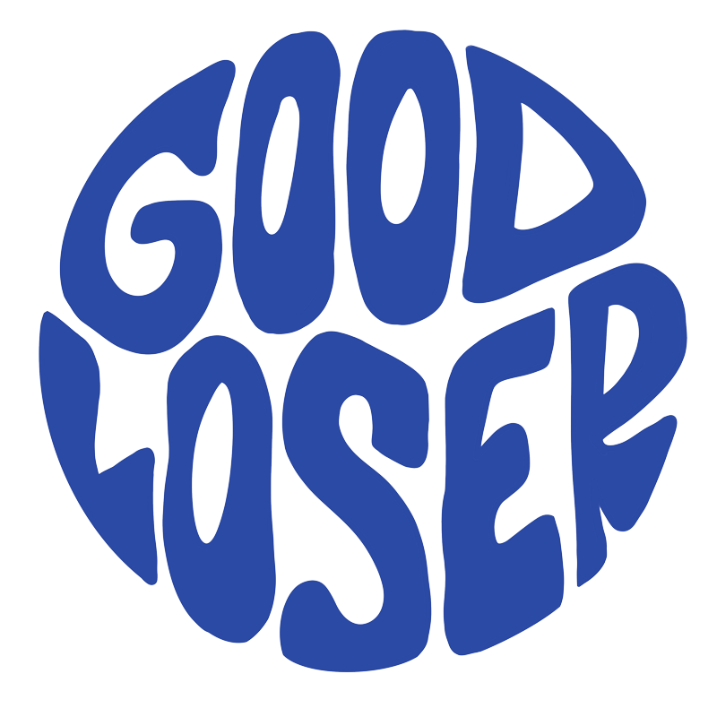

Medios financiados por la comunidad que documentan el poder, el trabajo y la comunidad.
Herramientas para Votantes de WA
Documentales Recientes
John Duresky Está Construyendo un Movimiento Para Todos Marcha Inmigrante Entrevista con John Duresky Crucial Times Fest